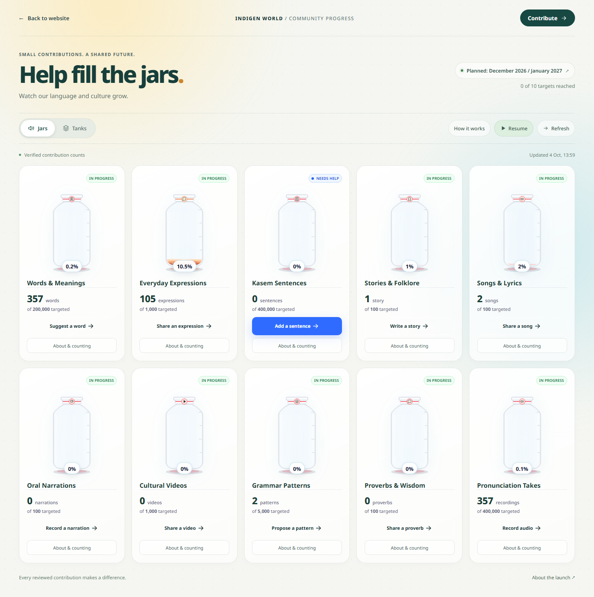
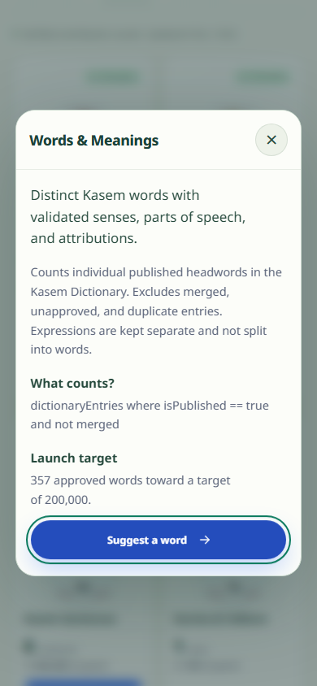

The Indigen World progress page now gives the jars and tanks the whole browser window. The usual website header and footer step aside, while a back button keeps the rest of the website close by.
Availability: Deployed to the public website on 4 October 2026, with the live page and its release assets verified on both public domains. The Blogger article remains unpublished.

Long explanations and dropdowns have become buttons that open popups. You can check how progress is counted, learn about a category, or change the page controls without reading through a large block of text first. Close the popup to return to the same vessels.
Each category still has its contribution button. Choose the kind of material you can help with, then follow that button to the contribution workflow. The vertical jars and horizontal tanks remain two ways to view the same progress.

The liquid moves through four colour stages as a category approaches its target: red, yellow, blue, then green. More liquid brings more and larger bubbles. The colour and motion complement the written count and percentage, so you can still understand progress without relying on colour alone.
An empty vessel stays empty. A category whose target is being set cannot show a made-up percentage or bubbles. When contributions go beyond a target, the vessel stays within its glass while the count continues to show the actual amount.
This is a new presentation of the existing progress service. Counts use its published or confirmed records and configured launch targets; the redesign does not change what each category counts. Connection problems can prevent an update or leave previously cached progress on screen. Read the page’s status and explanations when checking the figures. The planned December 2026 / January 2027 launch window remains a plan.
Use Pause motion whenever you prefer a quieter view. The page also respects your device’s reduced-motion setting and pauses its vessel animations when the browser tab is hidden.
Explore the progress page to see where community contributions are growing and choose where you can help next.